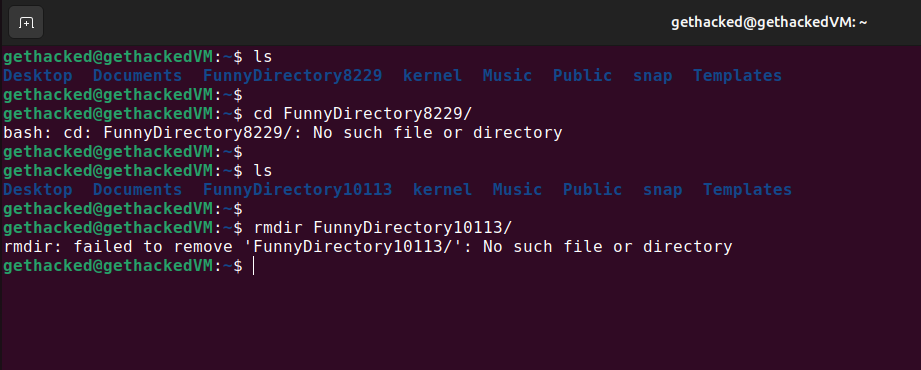
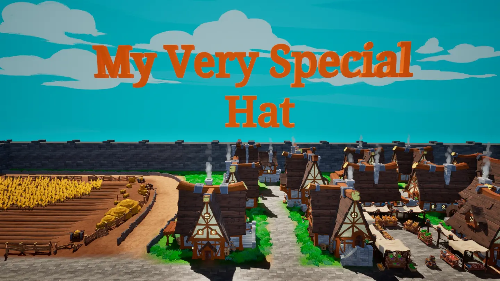
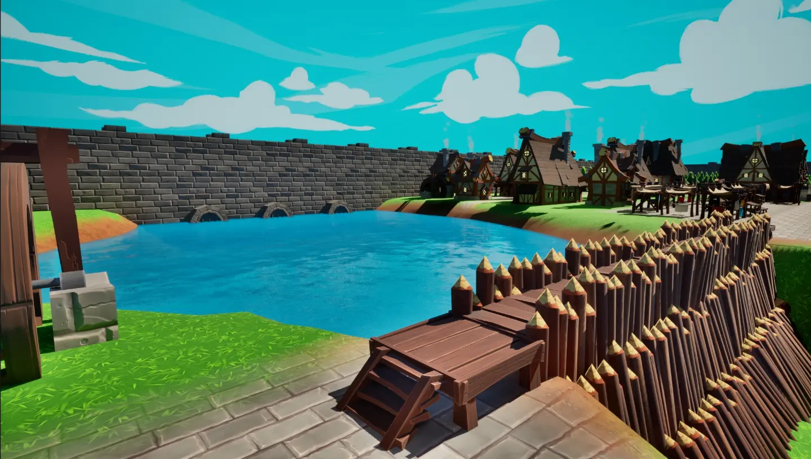
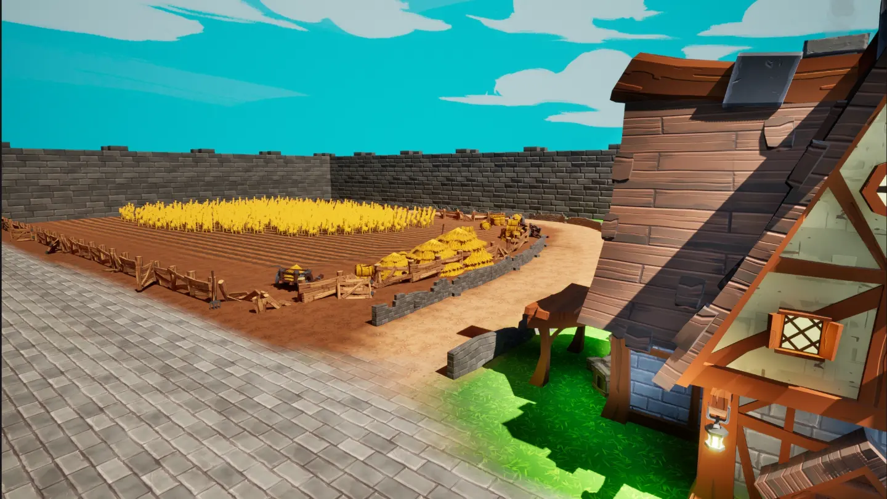

Projects
Logisim Computer
- Designed and simulated a custom 8-bit CPU architecture using electrical logic gates and registers
- Built a compatible 6502-based assembler and disassembler for low-level instruction encoding
- Designed machine level programs to perform tasks under extreme architectural constraints
This is a custom 8-bit CPU architecture that I designed and simulated in Logisim. Using only logic gates, registers, and electrical signals, I implemented 16 instructions in hardware. I then wrote programs in machine language to harness the capabilities of this architecture despite its extreme limitations, which required creative problem solving. For example, the program shown here is capable of doing arbitrary division of any 2 numbers, even though the only operation available at the hardware level is addition and a carry bit check. I also wrote an assembler and disassembler in C to assemble 6502 based assembly into machine level instructions for this computer. This project taught me a lot about creative and innovative problem solving, and designing robust systems at the lowest level.
Image Detection (OpenCV)
- Built a visual detection program using OpenCV to interact with game elements at 95% accuracy
- Integrated Windows API calls for raw mouse and keyboard input control
- Demonstrated real-time feedback and adaptive gameplay based on image recognition
This is a Python bot that uses OpenCV for real time image detection to play games. Using calibratable masks, the bot can correctly identify targets or items of interest and interact with them. Initially I programmed the bot to be able to play piano tiles, as the detection area and algorithm is much simpler for fixed area components, but I then moved on to enabling it to play training modes in AimLabs with perfect accuracy. I experienced issues getting the bot to properly move in certain games, but the bot now makes Windows API calls to raw keyboard and mouse movements to overcome this. This project taught me a lot about real-time image detection, process automation, and obviously the OpenCV library as well as others.
Bash Shell Extension

- Created a Bash shell extension that executes arbitrary commands after each user input
- Implemented self-modifying code and filesystem evasion techniques to resist deletion
This is a self-modifying bash script that interacts with the bash shell in Linux. Everytime any command is run in the terminal, Rick Astley's famous song, "Never Gonna Give You Up", plays in ASCII characters in the terminal. This script resides in a directory called FunnyDirectory, which constantly moves itself, as shown in the screenshot here. Even if the user recursively deletes their home directory, the script will repopulate itself. This was a very fun project, even though I bricked several virtual machines in the process. This project taught me a lot about self-modifying code, and the inner workings Linux's file system and terminal.
Unreal Engine 5 Games



- Developed several 3D multiplayer video games supporting local and online co-op
- Published 2 separate titles to Steam and itch.io with integrated marketing and deployment pipelines
Since highschool I've been working on creating many games with C++ in Unreal Engine 5, the most notable of which was called "My Very Special Hat". This game was acquired from me during production by a publisher, but due to unfortunate circumstances, this publisher went under in 2022 before the game was fully released. But I learned a ton from this experience. I learned how to collaborate with others on large scale projects, delegate work based on a vision, and communicate ideas effectively. During this time and before was also where I gained many of my coding skills that I have today. Whether it was efficient algorithms, environment interaction, or physics simulation systems, it was a constant learning experience. Although there were unfortunate situations along the line, these projects were still a huge learning experience in many fields that I am very thankful for.